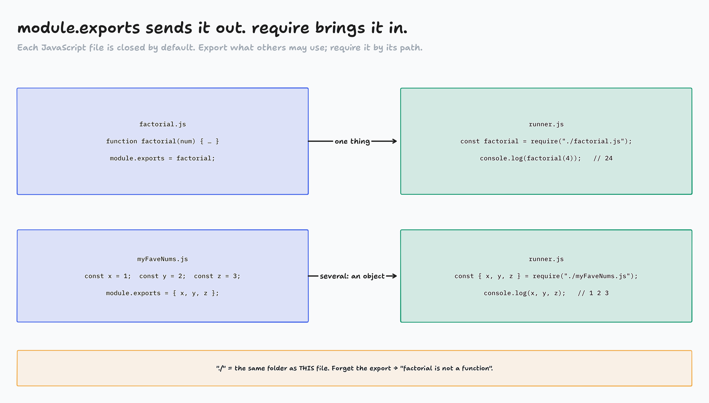
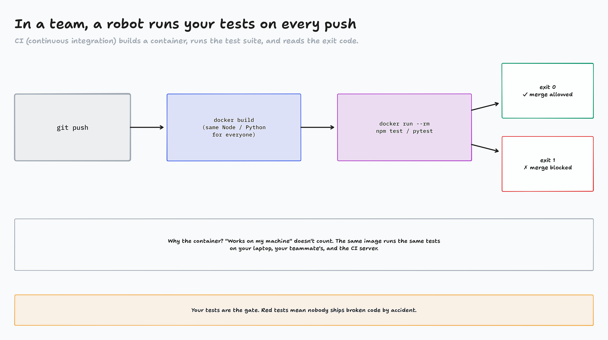

Fundamentals · Test Driven Development · Part 2 of 2
The same TDD, in JavaScript
Share code between files, then test it with Jest: describe, test, expect. Typed and run live.
A test lives in its own file
factorial.jsholds the code.factorial.spec.jsholds the tests- In Python,
from example import …just worked - In JavaScript, a file shares nothing until you export it
So first: how one JS file uses another.
Export it, then require it factorial.js · runner.js

diagrams/TD2-01-exports-require.tldr
Set up Jest: package.json npm init -y · "test": "jest" · npm install
How Jest finds your tests
| pytest | Jest | |
|---|---|---|
| test file | test_example.py | factorial.spec.js · factorial.test.js |
| or a folder | (any folder) | __tests__/ |
| one test | def test_add(): | test("adds", () => { … }) |
| check | assert x == 4 | expect(x).toBe(4) |
| run | pytest | npm test |
test() takes a description and a function to run later (a callback).
Your first Jest test factorial.spec.js · factorial.js
![Reading Jest: the badge, the list, then the story. Example output: FAIL ./factorial.spec.js; a cross next to tests factorial(4) = 24; then a bullet block for that test: expect(received).toBe(expected), Expected: 23, Received: 24, and the failing line 4 with a caret under the matcher; then Tests: 1 failed, 1 total. Key: PASS or FAIL per file; a check mark passed, a cross failed, a circle skipped. Expected is what you wrote in toBe; Received is what your code returned. The greater-than line is the failing line and the caret marks the matcher. Exit code 0 pass, 1 fail. Read Expected and Received first, then decide whether the test is wrong or the code is.](../diagrams/TD2-02-reading-jest.png)
diagrams/TD2-02-reading-jest.tldr
Activity: PASS, FAIL or SKIPPED?
- A Jest test appears (
factorialis the one we wrote) - In chat on "go": PASS, FAIL or SKIPPED
- Watch
toBevstoEqual
Page: activity-pass-fail-skipped/
Group with describe, skip with x factorial.spec.js
Jest in a container
Dockerfile (in tdd-jest/)
FROM node:18-alpine WORKDIR /app COPY package*.json ./ RUN npm install RUN npm install --save-dev jest COPY . . CMD ["npm", "test"]
- package.json first, then
npm install: dependencies are baked into the image COPY . .brings in your code and tests- The container runs the suite once and stops
docker build -t jest-tests . docker run --rm jest-tests echo $?

diagrams/TD2-03-ci-pipeline.tldr
The docs have the rest
- Today was the basics. The docs show every matcher
- Using Matchers: start here (
toBe,toEqual,toContain…) - Expect: the full list (API menu)
- Search (top right, or Ctrl+K): one word, like
toThrow
Homework: Test my Calculator is pytest. Its capsys and monkeypatch pages are in the tabs.
https://jestjs.io/docs/using-matchers
Homework, Part II
Top to bottom: each one is a little harder.
- Fibonacci (Jest):
npm install, thennpm test - Linear Search (Jest):
npm install, thennpm test, then add tests - Test my Calculator (pytest): write
test_calculator.pywithcapsysandmonkeypatch
Red first: run the tests before you write any code.